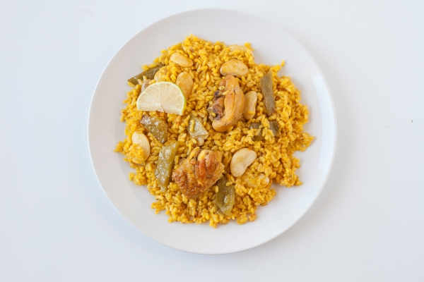

Paella Valenciana

Ingredientes
- 400 g de arroz
- 1 pollo troceado
- 200 g de conejo troceado
- 150 g de judía verde plana
- 100 g de garrofón
- 2 tomates maduros rallados
- Aceite de oliva virgen extra
- Azafrán
- Pimentón dulce
- Sal
- Agua o caldo
Elaboración
- Calentar el aceite en la paellera y dorar el pollo y el conejo.
- Añadir la judía verde y el garrofón y sofreír unos minutos.
- Incorporar el tomate rallado y el pimentón, sofreír sin que se queme.
- Añadir el agua o el caldo, el azafrán y la sal, y dejar cocer unos 20 minutos.
- Echar el arroz repartido de forma uniforme y cocer a fuego medio unos 18-20 minutos sin remover.
- Dejar reposar unos minutos fuera del fuego antes de servir.